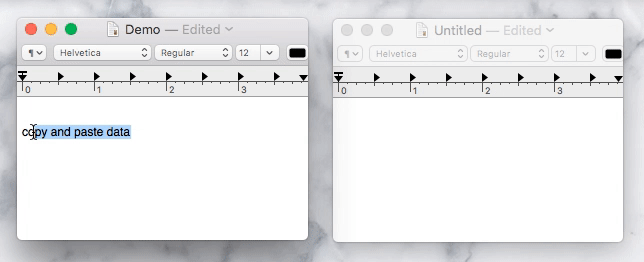
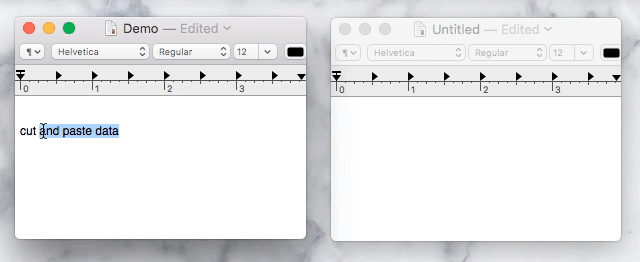
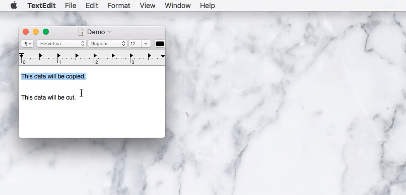
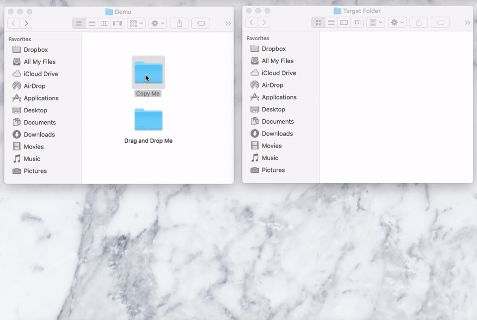

Information transfer allows users to efficiently move data between documents, folders, applications, and computers.
Due to the several different types of information transfer, there is no typical appearence for an information transfer functionality. Most commontly, information transfer presents in the form of copy, cut, and paste of particular data, drag and drop operations, or specialized sharing operations. For this initial analysis of information transfer, we will focus on the intricacies of copy, cut, and paste within and between applications.
Different applications may show or hide the contents of the clipboard differently. Most platforms, however, provide a menu option that allows a user to view the contents of their current clipboard. For example, on a Mac OS X platform, opening the Edit menu from the Finder application, and selecting View Clipboard opens a small window with the contents of the current clipboard. An illustration of what that might look like is shown below.
The main goal of cut, copy, and paste is to provide users an easy and efficient way to transfer information from a source to a target without redoing previously done work.
Command + C action, the value of the data would be of type "text". The typical use case of cut, copy, paste requires a section of data to be written into the clipboard when the user completes a cut, copy, or similar other action. The data then exists in the clipboard indeterminately until the user completes a paste action, when the data in the clipboard is applied to a user-indicated location.
The most important events to complete these tasks are the cut, copy, and paste actions. Each of these events can be completed using keyboard shortcuts, right-click menus, and other application based menus. The cut event adds user selected data to the clipboard and simultaneously removes that same data from the source (i.e. from the location the user selected the data). The copy event adds the user selected data to the clipboard as well, but it keeps the data in place and unaffected at its source. The paste event duplicates the data in the clipboard at a user selected target location. The target location can exist within the same document, folder, or application, or at a different document, folder, or application.
Clipboard states include full and empty. The full state indicates data currently sitting in the clipboard that is ready to be added to any target location. The empty state indicates that no data has been added to the clipboard using any of the events previously described. While the clipboard is full, the user can attempt to replicate that same data into whichever target location is desired. Often, the target location is limited by the data types allowed in that location (more information regarding this functionality can be found in the Key Characteristics section).
When data is replicated at the target location, the data remains in the clipboard until it is overwritten by a new cut or copy event. In a typical use case, these are the only two actions that change the data in the clipboard without restarting the system or application.
After data is selected, a simple right click over the data will show the cut, copy, and paste menu options. Copying and pasting the data will simply duplicate the data from the source location to the target location.
In contrast, cutting and pasting the data will remove the data from the source location and duplicate it at the target location.
When a cut or copy command is completed, the clipboard is modified. When a paste command is completed, the clipboard does not change.
Keyboard shortcuts and drag and drop can both be used to cut, copy, and paste data as well. The keyboard shortcuts for cut, copy, and paste are Command + X, Command + C, and Command + V respectively. Below is an example of a user dragging and dropping data.
Different data types can be copied and pasted as well. Below is an example of folders being cut, copy, and pasted. More information about how to complete these tasks can be found in the Platfrom-Specific Instances section. Similar tasks can be done with individual files, applications, and more.
Because cut, copy, and paste is an incredibly useful and important functionality, each of the usability metrics are equally and especially important. Cut, copy, and paste tasks can be completed via menu options, keyboard shortcuts, and drag and drop interfaces. In fact, several menus in various locations carry these functionalities including right-click menus and application menus. The user has the ability to go to various intuitive locations or complete intititive actions in order to perform these functions, thereby decreasing the number of errors they might make along the way.
Furthermore, learnability is fairly high because even users with only basic knowledge of computers are aware of right-click menus, or even more simply, Edit menus, and can therefore find and learn how to use these functionalities quickly. The names of the functionalities represent real-world actions, allowing the user to create a clear and memorable picture of the commands they are completing. The high level of learnability combined with the intuitive nature of the functions allow for great memorability.
Keyboard commands and drag-and-drop compatibility allow these functionalities to be completed efficiently as users can quickly use these commands without accessing any other menus. While users may not be actively thinking about their satisfaction levels when completing cut, copy, and paste functions, the existence of these functions and the ease of use intrinsically allow for satisfaction. The user is saved from retyping or recreating a set of data because they can easily and efficiently move that data from location to location.
In addition to right-click copy and paste, files can be moved using a special keyboard shortcut: Command+Option+V. A similar action can be completed in other platforms with different keyboard shortcuts.
OS X El Capitan contains a functionality within several of its applications called Share. Outside of menu options, the Share button is often featured as a rectangular button with an arrow coming out of the center, as seen below. The Share button allows users to transfer data easily from one application to another.
OS X El Capitan also allows users to transfer data between their Apple products using a functionality called Airdrop. Airdrop allows users to share several types of data including files, folders, pictures, music, etc.